🤖 아두이노가 무엇일까요?
- 우리가 컴퓨터로 짠 프로그램을 기억하고, 센서와 모터를 내 맘대로 움직이게 해주는 ‘로봇의 작은 두뇌’예요!
- 컴퓨터 프로그램(소프트웨어)과 부품을 꽂는 파란색 판(하드웨어 보드)이 한 세트로 되어 있어서 누구나 쉽게 로봇이나 사물인터넷(IoT) 장치를 만들 수 있답니다.
- 눈(센서)으로 주변 장애물을 보고, 발(모터)을 굴려 바퀴를 움직이거나 반짝반짝 불빛(LED)을 켜도록 명령을 내리는 멋진 지휘자 역할을 해요!
💡 한눈에 쏙쏙 정리
// 아두이노 기본 LED 깜빡이기 예제 코드
const int LED_PIN = 13; // 아두이노 우노 보드에 내장된 LED 핀 번호 (13번)
void setup() {
// 13번 핀을 출력(OUTPUT) 모드로 설정합니다.
pinMode(LED_PIN, OUTPUT);
// 컴퓨터와 통신을 시작합니다. (속도: 9600)
Serial.begin(9600);
Serial.println("아두이노 준비 완료!");
}
void loop() {
digitalWrite(LED_PIN, HIGH); // LED 켜기 (전압 HIGH = 5V)
Serial.println("LED가 켜졌습니다.");
delay(1000); // 1초(1000ms) 동안 대기
digitalWrite(LED_PIN, LOW); // LED 끄기 (전압 LOW = 0V)
Serial.println("LED가 꺼졌습니다.");
delay(1000); // 1초(1000ms) 동안 대기
}🚀 자율주행 RC카는 어떻게 작동할까요?
자율주행 RC카는 사람의 조종 없이도 스스로 움직이는 똑똑한 자동차예요. 작동하는 기본 원리는 아래와 같은 흐름으로 이루어집니다.
💡 실제 자율주행 자동차 vs 교육용 RC카
- 실제 자율주행차: 수많은 고성능 센서(라이다, 카메라, 레이더 등)와 복잡한 인공지능(AI) 알고리즘을 사용해요.
- 교육용 RC카: 초음파 및 적외선 센서와 아두이노 보드를 활용한 기초 프로그래밍을 통해 자율주행의 핵심 기본 원리를 배워요.
🚗 실제 자동차의 똑똑한 안전 시스템들
- 자동긴급제동(AEB): 전방 충돌이 예상되면 스스로 멈춰요.
- 차간거리제어(ACC): 앞차와의 안전거리를 일정하게 유지하며 달려요.
- 차선이탈경고(LDW): 차선을 벗어나면 운전자에게 경고를 줘요.
💻 작성한 코드를 아두이노에 업로드해 보아요!
컴퓨터에서 작성한 프로그램(코드)을 아두이노의 머릿속(메모리)에 집어넣는 과정을 "업로드(Upload)"라고 해요. 아두이노 최신 버전(IDE 2.x 이상)을 기준으로 올바르게 코드를 업로드하는 방법을 알아봅시다!
1 RC카와 컴퓨터 연결 및 전원 켜기
RC카에 USB 연결선(데이터 케이블)을 꽂고 컴퓨터의 USB 포트에 연결하세요. 연결한 후에는 RC카의 스위치를 켜야 아두이노가 정상 작동하고 컴퓨터에서 인식할 수 있습니다.
2 아두이노 프로그램(IDE) 실행 및 파일 열기
다운로드받은 아두이노 코딩 파일(.ino 확장자)을 더블 클릭해 실행하세요. 또는 아두이노 IDE를 실행한 뒤 파일(File) > 열기(Open)를 통해 다운로드한 코딩 파일을 불러옵니다.
3 보드(Board) 설정 (사용할 보드)
우리가 사용하는 아두이노 종류를 컴퓨터에 알려주는 설정입니다.
- 방법 A (최신 버전 추천): IDE 상단 툴바의
보드 및 포트 드롭다운 메뉴를 클릭한 뒤 "Arduino Nano"를 선택합니다. - 방법 B: 상단 메뉴에서
툴(Tools) > 보드(Board) > Arduino AVR Boards > Arduino Nano를 차례대로 선택합니다.
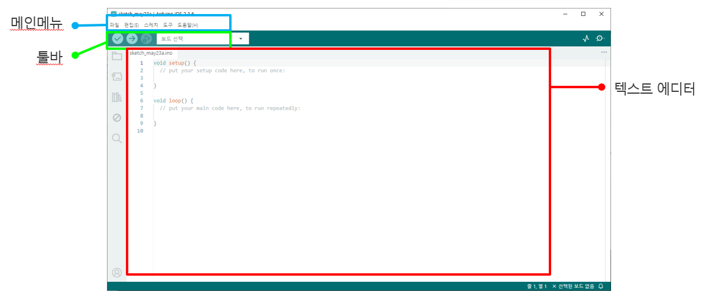
4 포트(Port) 설정
컴퓨터가 아두이노와 대화할 수 있는 연결 통로(포트)를 지정합니다.
- 방법 A (최신 버전 추천): IDE 상단 툴바의
보드 및 포트 드롭다운 메뉴에서 연결된 아두이노 옆에 표시된 COM 포트(예: COM3, COM4 등)를 선택합니다. - 방법 B: 상단 메뉴에서
툴(Tools) > 포트(Port)로 들어가 새롭게 나타난 포트를 선택합니다. (예: COM3, COM4 등 옆에 Arduino Nano라고 표시되어 있습니다.)
5 코드 확인(컴파일)하기
아두이노 IDE 왼쪽 상단에 있는 ✔️ (확인/Verify) 버튼을 누릅니다. 코드가 올바르게 작성되었는지 검사하는 단계로, 잠시 기다리면 하단 출력창에 Done compiling (컴파일 완료) 문구가 뜹니다.
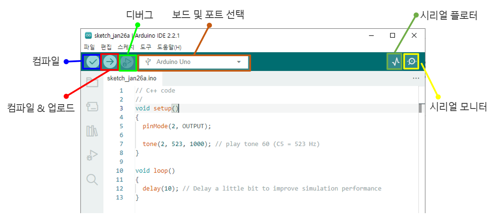
6 코드 업로드(Upload)하기
확인이 완료되면 ✔️ 버튼 바로 옆에 있는 ➡️ (업로드/Upload) 버튼을 누릅니다. 코드가 아두이노 보드로 전송되며, 아두이노의 빨간 불빛들이 깜빡입니다. 잠시 기다린 후 하단 출력창에 Done uploading (업로드 완료) 표시가 뜨면 완벽하게 성공한 것입니다! 🎉
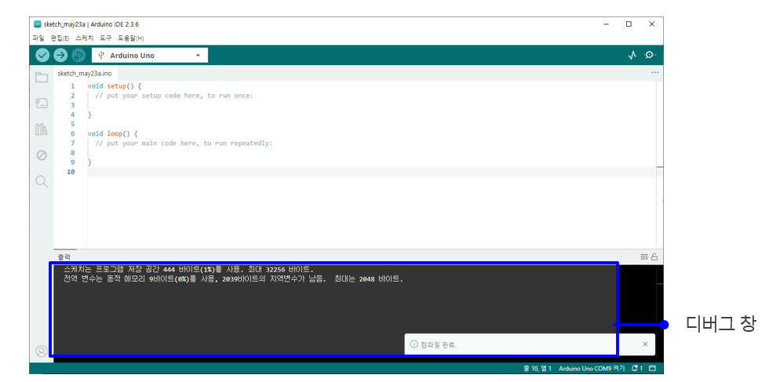
7 아두이노 호환보드 / 파일 업로드가 안될 때 확인 사항
만약 업로드 중에 오류가 발생하고 파일 전송이 안 된다면, 호환용 아두이노 칩셋 인식을 위한 CH340 드라이버가 컴퓨터에 설치되어 있지 않기 때문일 수 있습니다.
💻 CH340 드라이버 설치 방법
- 아래의 다운로드 버튼을 눌러 설치 파일을 내려받습니다.
- 압축 파일을 푼 후 CH341SER.EXE 파일을 실행합니다.
- 프로그램 창에서 Install 버튼을 누르면 설치가 완료됩니다.
- 설치가 끝나면 아두이노 IDE 프로그램을 껐다가 다시 켜주세요.
📦 조립 전 구성품을 확인해요!
아래 그림과 같은 구성품들이 모두 들어있는지 꼼꼼하게 확인해 보세요.
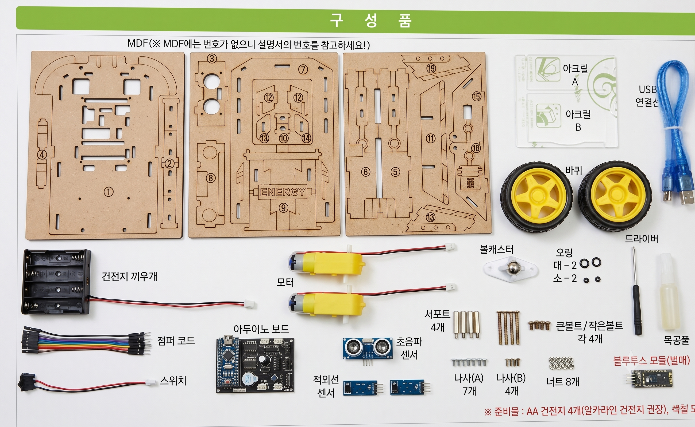
구성품 체크리스트 (클릭해서 체크해 보세요!)
🔌 회로도 확인
아두이노 보드와 모터, 센서, 배터리 등을 연결할 때 아래 회로도를 참고하세요.
(전선 색상은 제품에 따라 다를 수 있으니 회로도의 숫자를 확인하고 순서대로 연결해 주세요!)
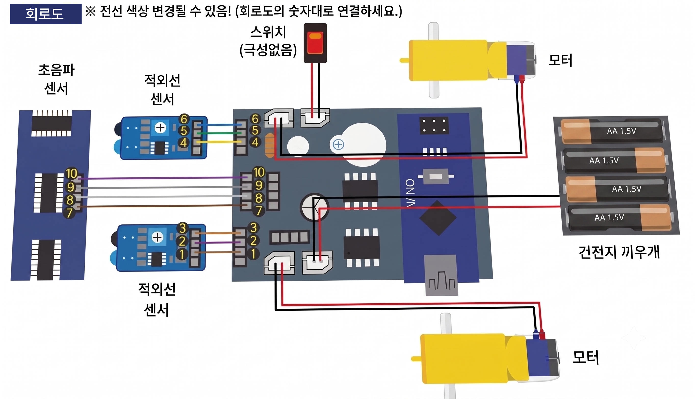
🎨 RC카 꾸미기 (사전 도색)
RC카 키트를 조립하기 전, 나중에 색칠하기 어려운 부분들을 미리 도색하는 과정입니다. 넓고 평평한 면과 세밀한 조각들에 다양한 색을 칠해 나만의 개성 있는 RC카를 만들어 보세요.
⚠️ 주의: 색칠 후에는 도료가 완전히 마를 때까지 충분히 건조시켜야 조립 시 변형이나 오염을 막을 수 있습니다.
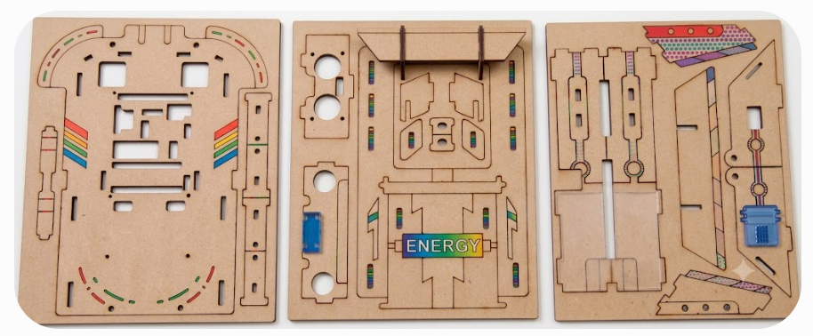
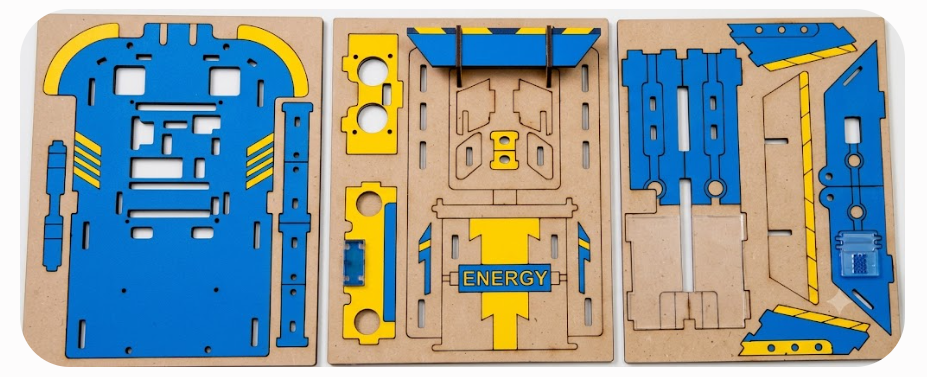
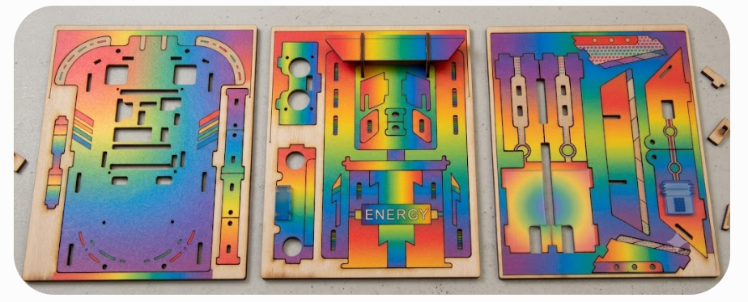
🦇 초음파 센서(HC-SR04)의 거리 계산 원리
초음파 센서는 박쥐처럼 초음파(귀에 들리지 않는 높은 소리)를 발사한 뒤, 물체에 부딪혀 돌아오는 시간을 계산해서 거리를 알아내요.
RC카가 장애물을 피해서 스스로 운전하는 자율주행을 배워봅니다.
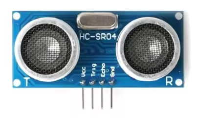
📡 ───＞
＜─── 📻
📐 거리 계산 공식
소리가 공기 중에서 퍼져나가는 속도는 약 340m/s(1초에 340미터 이동)예요. 거리는 아래 공식으로 계산됩니다.
* 2로 나누는 이유는 소리가 물체까지 왕복(갔다가 돌아오는 시간)했기 때문에, 편도 거리를 구하기 위해서예요!
// 초음파 센서 핀 정의
#define TRIG_PIN 3
#define ECHO_PIN 2
// 모터 제어 핀 정의 (L9110H-01)
#define MOTOR1_IA 11
#define MOTOR1_IB 10
// 모터 제어 핀 정의 (L9110H-02)
#define MOTOR2_IA 5
#define MOTOR2_IB 6
// 부저 핀 정의
#define BUZZER_PIN 12
void setup() {
// 초음파 센서 핀 설정
pinMode(TRIG_PIN, OUTPUT);
pinMode(ECHO_PIN, INPUT);
// 모터 제어 핀 설정
pinMode(MOTOR1_IA, OUTPUT);
pinMode(MOTOR1_IB, OUTPUT);
pinMode(MOTOR2_IA, OUTPUT);
pinMode(MOTOR2_IB, OUTPUT);
// 부저 핀 설정
pinMode(BUZZER_PIN, OUTPUT);
}
void loop() {
// 거리 측정
long duration, distance;
digitalWrite(TRIG_PIN, LOW);
delayMicroseconds(2);
digitalWrite(TRIG_PIN, HIGH);
delayMicroseconds(10);
digitalWrite(TRIG_PIN, LOW);
duration = pulseIn(ECHO_PIN, HIGH);
distance = duration * 0.034 / 2;
// 거리 조건에 따른 모터 및 부저 제어
if (distance > 5) {
// 5cm 이상일 때: 두 모터가 정방향으로 회전하고, 부저는 울리지 않음
digitalWrite(MOTOR1_IA, HIGH);
digitalWrite(MOTOR1_IB, LOW);
digitalWrite(MOTOR2_IA, HIGH);
digitalWrite(MOTOR2_IB, LOW);
digitalWrite(BUZZER_PIN, LOW);
} else {
// 5cm 이하일 때: 부저가 멜로디를 울리면서 후진, 좌회전 후 정지
// 모터 정지
digitalWrite(MOTOR1_IA, LOW);
digitalWrite(MOTOR1_IB, LOW);
digitalWrite(MOTOR2_IA, LOW);
digitalWrite(MOTOR2_IB, LOW);
playMelody(); // 멜로디 재생
// 모터를 0.5초 동안 후진
digitalWrite(MOTOR1_IA, LOW);
digitalWrite(MOTOR1_IB, HIGH);
digitalWrite(MOTOR2_IA, LOW);
digitalWrite(MOTOR2_IB, HIGH);
delay(500);
// 모터를 0.5초 동안 좌회전 (모터1은 후진, 모터2는 정방향)
digitalWrite(MOTOR1_IA, LOW);
digitalWrite(MOTOR1_IB, HIGH);
digitalWrite(MOTOR2_IA, HIGH);
digitalWrite(MOTOR2_IB, LOW);
delay(500);
// 모터 정지
digitalWrite(MOTOR1_IA, LOW);
digitalWrite(MOTOR1_IB, LOW);
digitalWrite(MOTOR2_IA, LOW);
digitalWrite(MOTOR2_IB, LOW);
}
// 짧은 딜레이 추가
delay(200);
}
// 멜로디 재생 함수
void playMelody() {
int melody[] = {362, 394, 430, 449, 492}; // 도, 레, 미, 파, 솔 음계 (주파수 값)
int noteDuration = 200; // 각 음의 지속 시간 (밀리초)
for (int i = 0; i < 5; i++) {
tone(BUZZER_PIN, melody[i]);
delay(noteDuration);
}
noTone(BUZZER_PIN); // 멜로디 재생이 끝나면 부저 끄기
}🔍 바닥의 검은색 선을 감지해서 쫓아가요!
RC카 아래에 달린 "적외선 센서(바닥을 보는 눈)"를 통해 흰 종이에 그려진 검은색 길을 탈선하지 않고 졸졸 따라가는 라인트레이서 로봇을 만들어 봐요. 검은색 선은 빛을 먹어버리고(흡수), 흰색 종이는 빛을 그대로 돌려보내는 원리를 사용합니다!
🚥 바퀴를 조작하는 4가지 규칙
- 양쪽 눈 모두 흰 바닥일 때: 안전한 길 한가운데 있으니 쭉 직진!
- 왼쪽 눈에 검은 선이 보일 때: 왼쪽으로 이탈 중! 좌회전해서 제자리로 돌아오기
- 오른쪽 눈에 검은 선이 보일 때: 오른쪽으로 이탈 중! 우회전해서 제자리로 돌아오기
- 양쪽 눈 모두 검은 선일 때: 멈추거나 교차로 신호 대기하기
🔍 적외선 센서(TCRT5000)의 감지 원리
적외선 센서는 사람이 볼 수 없는 빛인 적외선(IR)을 이용해 바닥의 명암(밝고 어두움)을 구별해요.
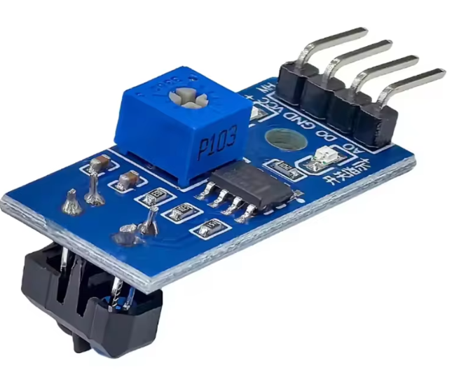
🔆 적외선 송수신 방식
- 적외선 송신기 (LED): 보이지 않는 적외선 빛을 바닥으로 뿜어내요.
- 적외선 수신기 (Phototransistor): 바닥에서 반사되어 되돌아오는 적외선 빛의 양을 측정해요.
🎨 흰색과 검은색의 빛 반사율 차이
- 흰색 바닥 (흰 종이): 적외선 빛을 많이 반사하여 센서가 강한 신호를 받아요.
- 검은색 바닥 (라인): 적외선 빛을 대부분 흡수하여 센서가 반사된 빛을 받지 못해요.
* 이 차이를 분석하여 검은색 선 위에 있는지, 흰색 바닥 위에 있는지를 판단합니다.
// TCRT5000 센서 핀 정의
#define RIGHT_SENSOR_PIN 4
#define LEFT_SENSOR_PIN 7
// 모터 제어 핀 정의 (L9110H-01)
#define MOTOR1_IA 11
#define MOTOR1_IB 10
// 모터 제어 핀 정의 (L9110H-02)
#define MOTOR2_IA 5
#define MOTOR2_IB 6
void setup() {
// TCRT5000 센서 핀 설정
pinMode(RIGHT_SENSOR_PIN, INPUT);
pinMode(LEFT_SENSOR_PIN, INPUT);
// 모터 제어 핀 설정
pinMode(MOTOR1_IA, OUTPUT);
pinMode(MOTOR1_IB, OUTPUT);
pinMode(MOTOR2_IA, OUTPUT);
pinMode(MOTOR2_IB, OUTPUT);
}
void loop() {
// 센서 값 읽기
bool rightSensor = digitalRead(RIGHT_SENSOR_PIN);
bool leftSensor = digitalRead(LEFT_SENSOR_PIN);
// 라인트레이서 로직
if (leftSensor == LOW && rightSensor == LOW) {
// 양쪽 센서가 라인을 감지할 때: 직진
digitalWrite(MOTOR1_IA, HIGH);
digitalWrite(MOTOR1_IB, LOW);
digitalWrite(MOTOR2_IA, HIGH);
digitalWrite(MOTOR2_IB, LOW);
}
else if (leftSensor == LOW && rightSensor == HIGH) {
// 좌측 센서가 라인을 감지할 때: 좌회전
digitalWrite(MOTOR1_IA, LOW);
digitalWrite(MOTOR1_IB, LOW);
digitalWrite(MOTOR2_IA, HIGH);
digitalWrite(MOTOR2_IB, LOW);
}
else if (leftSensor == HIGH && rightSensor == LOW) {
// 우측 센서가 라인을 감지할 때: 우회전
digitalWrite(MOTOR1_IA, HIGH);
digitalWrite(MOTOR1_IB, LOW);
digitalWrite(MOTOR2_IA, LOW);
digitalWrite(MOTOR2_IB, LOW);
}
else {
// 양쪽 센서가 라인을 감지하지 않을 때: 정지
digitalWrite(MOTOR1_IA, LOW);
digitalWrite(MOTOR1_IB, LOW);
digitalWrite(MOTOR2_IA, LOW);
digitalWrite(MOTOR2_IB, LOW);
}
delay(10); // 짧은 딜레이 추가
}🎮 스마트폰으로 조종하는 무선 조종 RC카
스마트폰의 무선 인터넷 신호 중 하나인 "블루투스(Bluetooth)" 기능을 이용해 RC카를 무선 조종하는 단계예요. 스마트폰 조종기 앱으로 명령 버튼을 누르면 무선 전송을 통해 RC카가 신호에 반응하여 동작합니다.
[HC-06 블루투스 모듈 삽입 방향]
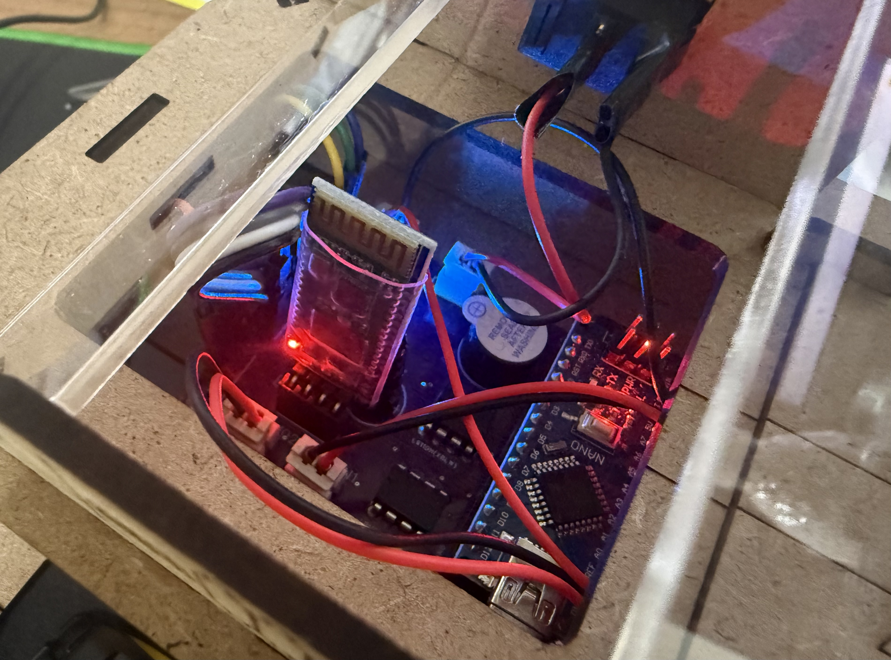
HC-06 블루투스 모듈을 장착할 때 핀의 연결 방향을 올바르게 맞추어 삽입해야 합니다. 4개 핀 ( RXD, TXD, VCC, GND 핀)이 보드의 올바른 위치에 결합되었는지 확인해 주세요.
[HM-10 블루투스 모듈 삽입방향]

HM-10 블루투스 모듈을 슬롯에 삽입할 때 방향을 꼼꼼히 확인해 주세요. (6개 핀 중에서 가운데 4개 핀만 연결, 양쪽 끝부분 핀 사용X) 핀 배열의 정렬 방향이 반대로 꽂히면 통신 오류나 기기 손상이 발생할 수 있습니다.
RC카 조종기 바로가기
bit.ly/rc카출발📶 블루투스 수신 칩(HC-06) 연결하기
- TXD 핀: 아두이노의 7번 구멍에 연결해요.
- RXD 핀: 아두이노의 4번 구멍에 연결해요.
- VCC와 GND: 아두이노의 5V(빨간줄)와 GND(검은줄)에 연결해요.
- * 아두이노가 스마트폰과 비밀 대화를 나누는 안테나 역할을 해줍니다.
📱 스마트폰 앱 세팅 및 비밀 문자
- 조종기의 화살표를 누를 때마다 보내는 알파벳 약속:
- F (Forward): 앞으로 가기
- B (Backward): 뒤로 가기
- L (Left): 왼쪽으로 돌기
- R (Right): 오른쪽으로 돌기
- S (Stop): 멈추기 (손가락을 뗄 때 전송되도록 세팅)
#include <SoftwareSerial.h>
#define MOTOR1_IA 11
#define MOTOR1_IB 10
#define MOTOR2_IA 5
#define MOTOR2_IB 6
// Bluetooth 모듈 핀 설정
#define BT_TX 7
#define BT_RX 4
// Bluetooth 소프트웨어 시리얼 초기화
SoftwareSerial bluetooth(BT_RX, BT_TX);
void setup() {
// 모터 제어 핀 설정
pinMode(MOTOR1_IA, OUTPUT);
pinMode(MOTOR1_IB, OUTPUT);
pinMode(MOTOR2_IA, OUTPUT);
pinMode(MOTOR2_IB, OUTPUT);
// Bluetooth 초기화
bluetooth.begin(9600);
Serial.begin(9600);
Serial.println("Bluetooth 제어 준비 완료. 스마트폰에서 명령을 전송하세요.");
}
void loop() {
// Bluetooth 데이터가 들어왔는지 확인
if (bluetooth.available()) {
char command = bluetooth.read(); // 명령어 읽기
Serial.print("수신된 명령: ");
Serial.println(command); // 명령어를 시리얼 모니터에 출력 (디버깅용)
// 명령어에 따른 동작 수행
switch (command) {
case 'F': // 전진
moveForward();
break;
case 'R': // 우회전
turnRight();
break;
case 'L': // 좌회전
turnLeft();
break;
case 'B': // 후진
moveBackward();
break;
default:
stopMotors(); // 알 수 없는 명령어가 들어오면 정지
break;
}
}
}
// 전진
void moveForward() {
digitalWrite(MOTOR1_IA, HIGH);
digitalWrite(MOTOR1_IB, LOW);
digitalWrite(MOTOR2_IA, HIGH);
digitalWrite(MOTOR2_IB, LOW);
Serial.println("전진 중...");
}
// 후진
void moveBackward() {
digitalWrite(MOTOR1_IA, LOW);
digitalWrite(MOTOR1_IB, HIGH);
digitalWrite(MOTOR2_IA, LOW);
digitalWrite(MOTOR2_IB, HIGH);
Serial.println("후진 중...");
}
// 우회전
void turnRight() {
digitalWrite(MOTOR1_IA, LOW);
digitalWrite(MOTOR1_IB, HIGH);
digitalWrite(MOTOR2_IA, HIGH);
digitalWrite(MOTOR2_IB, LOW);
Serial.println("우회전 중...");
}
// 좌회전
void turnLeft() {
digitalWrite(MOTOR1_IA, HIGH);
digitalWrite(MOTOR1_IB, LOW);
digitalWrite(MOTOR2_IA, LOW);
digitalWrite(MOTOR2_IB, HIGH);
Serial.println("좌회전 중...");
}
// 정지
void stopMotors() {
digitalWrite(MOTOR1_IA, LOW);
digitalWrite(MOTOR1_IB, LOW);
digitalWrite(MOTOR2_IA, LOW);
digitalWrite(MOTOR2_IB, LOW);
Serial.println("정지 중...");
}